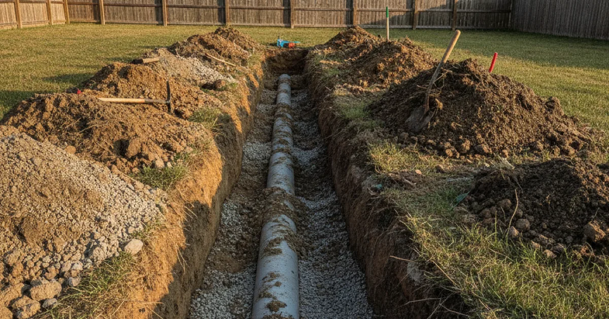
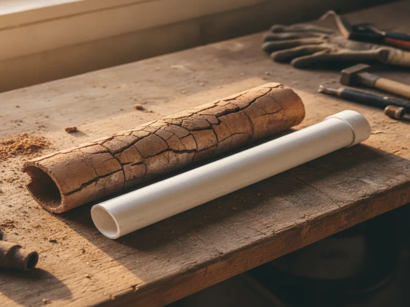

Sewer Line Repair in Armonk, NY
Backups, slow drains throughout the house, or a soggy patch in the yard can all point to a damaged sewer line. We diagnose it clearly, on camera, before recommending any repair.
- Licensed & Insured
- Same-Day Service Available
- Upfront Pricing
- 15+ Years of Experience

Signs of a damaged sewer line
A single slow drain is usually a simple clog. A damaged sewer line tends to show up differently: multiple drains backing up around the same time, gurgling toilets, or sewage odor near a floor drain or in the yard. Some homeowners also notice an unusually green or soggy patch of lawn along the line's path, even without any recent rain.
These signs mean the problem sits in the main line rather than a single fixture's branch pipe, which is why clearing one drain often doesn't solve it for long.
What causes sewer line damage
A lot of Westchester County homes built before 1980 have original clay or cast-iron sewer laterals running from the house to the street. Both materials are prone to cracking, shifting, and settling as the ground around them moves over decades, and clay pipe joints in particular can separate enough to let roots or soil in.
Beyond age, tree root intrusion, ground settling, and old, poorly sealed joints are the most common causes we find. Sometimes it's simply that the pipe has reached the end of its usable life, and beyond a certain point, small patch repairs stop making sense.

What to do before you call
If you're dealing with an active backup, avoid running more water through the house until we've had a chance to look at it — extra water can push sewage into a lower fixture like a basement floor drain. Note where you've seen soggy ground, sunken spots, or unusual odors outside, since that can help point to where along the line the problem is.
Don't dig or attempt to access the line yourself. A buried sewer lateral can be several feet down, and locating it safely takes the right equipment.
Our sewer line repair process
We always start by getting eyes on the actual problem. Our technicians confirm the damage on camera first, so we can see exactly where the pipe is cracked, separated, or blocked by roots before recommending anything. From there, we'll explain what repair options make sense — a targeted spot repair, a longer section replacement, or in some cases trenchless methods that avoid digging up the whole yard.
Once repairs are complete, we'll often flush the line clean before repairs begin and again afterward, clearing out any debris left over from the damaged section so the new pipe starts with a clean, clear line.
When to call a professional
Call us if more than one drain is backing up at once, if you notice sewage odor outside your home, or if a drain that seemed fixed keeps coming back within weeks. In some cases, a recurring clog is actually the first sign of a bigger sewer line problem rather than an isolated issue in one branch pipe.
Home inspectors, including those trained through InterNACHI, commonly flag aging clay and cast-iron sewer laterals as a concern in older homes. That's part of why we always run a camera inspection before recommending a repair, instead of skipping straight to one.
Sewer line repair is one part of keeping your whole drainage system working properly. See our broader drainage service offerings for everything else we handle, from routine cleaning to commercial grease trap care.
Frequently asked questions
How do I know if it's a clog or a damaged sewer line?
A single slow drain is usually a clog. Multiple drains backing up together, recurring problems, or odor and soggy spots outside typically mean the main sewer line needs attention.
Do I need to replace the whole sewer line, or can it be repaired in sections?
Often just a damaged section needs attention. We'll show you what the camera finds and recommend the smallest repair that actually solves the problem.
Will you have to dig up my whole yard?
Not always. Depending on the damage and the pipe's location, trenchless repair methods can sometimes avoid extensive digging. We'll walk you through what's realistic for your specific situation.
How long does sewer line repair take?
It depends on the extent of the damage and the repair method, ranging from a single day for a small spot repair to several days for a full section replacement.
Are older clay sewer lines really more likely to fail?
Yes, generally. Clay pipe joints can separate over decades, and cast-iron can corrode from the inside, both of which are common in pre-1980s Westchester homes.
Do you confirm the problem before recommending a repair?
Always. We use camera inspection to see the actual condition of the line before discussing any repair options with you.